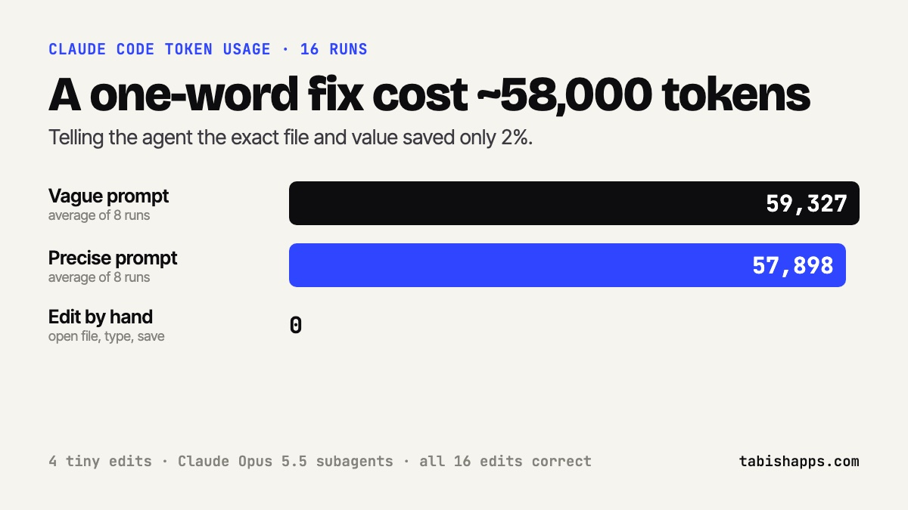
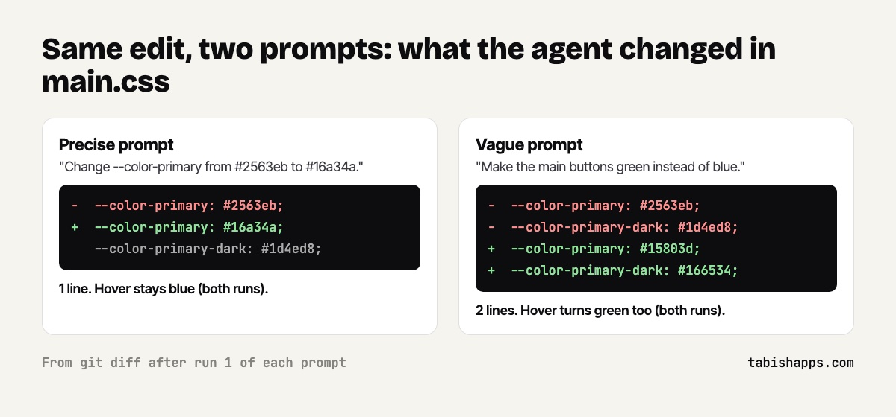

Claude Code token usage, tested: a one-word fix cost 58,000 tokens, and a precise prompt saved only 2%
- The test: 4 tiny edits in a small website project (a typo, a color, a number, a year), each asked 2 ways, vague and precise. 16 runs, each by a fresh Claude Code agent.
- The result: every run landed between 57,711 and 60,714 tokens. A one-word typo fix cost about as much as editing 4 files. Telling the agent the exact file and value saved only about 2% of tokens, but made runs about 16% faster.
- The advice: for a change you can already see, edit the file yourself: it costs 0 tokens. Save the agent for work where finding the place is the hard part, and batch small fixes into one request.

This test started with a joke. A post on X with about 46,000 likes said that vibe coders had found out you can edit files by hand "without burning any tokens". It's funny because it's true. But it made me ask a real question about Claude Code token usage: how many tokens does an agent actually spend on a change that takes a person five seconds?
I could not find a real number for this. The top search results explain how to check usage (the /usage command) and list tools that cut token use. None of them measure one small edit. So I measured it.
How I tested a one-word edit
I wrote the test rules down before running anything.
- The project: a small static shop website for a made-up coffee roaster. 8 files and 343 lines in total: 4 HTML pages, 1 CSS file, 2 JavaScript files and a README. It is 9,668 characters, which is roughly 2,400 tokens by the usual 4-characters-per-token rule.
- The agents: each run was a fresh Claude Code subagent (the built-in general-purpose type, on Claude Opus 5.5), started from my own Claude Code session. Each one got only the folder path and one short task. No memory of the other runs.
- The edits: 4 tiny changes, each asked 2 ways, each run twice. That is 16 runs. Every run started from a clean copy of the project in its own git repo.
- What I measured: the token total Claude Code reports when a subagent finishes, the number of tool calls, the time, and the git diff afterwards.
- What counted as correct: the change is made everywhere it is needed (for the year, all 4 page footers), and nothing unrelated is touched.
| Edit | Vague prompt | Precise prompt |
|---|---|---|
| Typo | "There's a spelling mistake in the newsletter page heading. Fix it." | "In src/pages/signup.html, change Recieve to Receive in the h1." |
| Color | "Make the main buttons green instead of blue." | "In src/styles/main.css, change --color-primary from #2563eb to #16a34a." |
| Number | "Free shipping should start at $75, not $50." | "In src/js/cart.js, change FREE_SHIPPING_THRESHOLD from 50 to 75." |
| Year | "Update the copyright year in the footer to 2026." | "In all four HTML files in src/pages/, change © 2025 to © 2026." |
How many tokens does Claude Code use for a tiny edit?
About 58,000. Here is every run:
| Edit | Prompt | Tokens (run 1 / run 2) | Tool calls | Seconds | Lines changed |
|---|---|---|---|---|---|
| Typo | Vague | 59,525 / 59,516 | 3 / 3 | 15.8 / 18.9 | 1 |
| Typo | Precise | 57,711 / 57,789 | 2 / 2 | 12.4 / 12.9 | 1 |
| Color | Vague | 60,714 / 60,696 | 3 / 3 | 19.0 / 18.1 | 2 |
| Color | Precise | 57,852 / 57,873 | 2 / 2 | 13.8 / 12.3 | 1 |
| Number | Vague | 59,400 / 58,355 | 2 / 2 | 14.1 / 15.3 | 1 |
| Number | Precise | 58,001 / 58,079 | 2 / 2 | 13.7 / 12.4 | 1 |
| Year | Vague | 58,316 / 58,097 | 2 / 2 | 13.5 / 12.5 | 4 |
| Year | Precise | 58,035 / 57,846 | 2 / 2 | 12.3 / 16.7 | 4 |
| Average | Vague | 59,327 | 2.5 | 15.9 | |
| Average | Precise | 57,898 | 2 | 13.3 |
All 16 runs made the right change. None touched a file or line it should not have. As a coding job, this was a clean pass.
The cost is the surprise. The cheapest run, fixing one misspelled word, used 57,711 tokens. The most expensive, changing two color values, used 60,714. The year change touched 4 files and still cost less than the vague typo fix.
Why does a tiny edit use so many tokens?
Look at the spread: 3,003 tokens between the cheapest and the most expensive run. The size of the task barely matters. The whole project is only about 2,400 tokens, and a 2-tool-call run reads just one file of it.
So most of those 58,000 tokens are not your code. My reading is that they are the agent's own starting context: its instructions, the tool definitions and the setup that every run loads before it even reads your request. The Claude Code subagent docs say each subagent runs in its own context window with its own system prompt, and that its requests count toward the same usage limits as your main conversation.
A normal Claude Code session has a starting context too, and every message you send carries the conversation so far. One small fix in a fresh session is the worst case: you pay the full base for very little work.
One thing softens this. Much of that starting context is usually served from the prompt cache, and the Claude Code cost docs show /usage splitting tokens into input, output, cache read and cache write. Cache reads are cheaper than fresh input. I did not measure that split for these runs, so treat 58,000 as "tokens processed", not as a bill. I wrote more about caching in why agents slow down in long sessions.
Does a precise prompt reduce Claude Code token usage?
A little. On average the precise prompts used 1,429 fewer tokens, about 2% less. They also finished faster: 13.3 seconds against 15.9 seconds on average.
Where the saving came from is easy to see in the tool calls. For the vague typo and color tasks, the agents made 3 tool calls: they first searched for the right file, then read it, then edited it. With a precise prompt they went straight to the file: 2 calls. One less search saved about 1,800 to 2,800 tokens.
For the number and year tasks, the vague prompts were already clear enough. "FREE_SHIPPING" is easy to find, and so is a copyright line. There the two styles cost almost the same.
So precision helps, but it does not change the big picture. You cannot prompt your way out of the base cost.
The vague prompt gave the better result once

This surprised me. The precise color prompt said: change --color-primary to green. Both agents did exactly that, and only that. But the buttons also have a hover color, --color-primary-dark, and it stayed blue. Hover over a green button and it turns dark blue.
Both precise agents noticed, and both said so in their reply. But both followed the instruction and left it alone. The vague prompt, "make the main buttons green", let the agents think about the goal, and both changed the hover color too.
The lesson is not "be vague". It is: a precise prompt is only as good as your own knowledge of the code. If you know the exact line, you can probably fix it yourself in less time than the agent takes.
When should you edit by hand instead?
Based on this test, I would skip the agent when:
- You can see the change. A typo on screen, a color value you know, a number in a config. Open the file, change it, save. 0 tokens, and often faster than the 12 to 19 seconds the agents took.
- You are on a plan with limits. At about 58,000 tokens per tiny job, a day of "fix this word" requests uses up your limit on work you could do in seconds.
And I would use the agent when:
- Finding the place is the hard part. "Why is the total wrong in the cart?" is worth 58,000 tokens. "Change 50 to 75 on line 13" is not.
- The change has ripple effects. As the color test showed, an agent that understands the goal may catch the second line you forgot.
- You can batch. Ten small fixes in one request pay the base cost once. In the year task, 4 files cost about the same as 1. Keep a list and send it together.
The Claude Code docs give similar advice for long sessions: run /clear between unrelated tasks, and run /context to see what is using space. For many small, similar steps, also see my test of the idea behind Code Mode, where one script replaced many tool calls.
Limits of this test
- I measured Claude Code subagents, not a full interactive session. A main session can carry more context (your CLAUDE.md, MCP servers, earlier messages), so its base cost may be higher or lower than this.
- One model (Claude Opus 5.5), one small project, 2 runs per prompt. Treat this as one honest sample, not a benchmark.
- The token figure is the total Claude Code reports per subagent. I did not split it into cached and fresh tokens, and I did not turn it into dollars.
- The "fixed starting context" explanation is my reading of the numbers, not something Claude Code reported directly.
- AI agents did the edits, as the test requires. I wrote the project, the prompts and the scoring rules, and checked every diff myself.
FAQ
How many tokens does Claude Code use for a small edit?
In this test, a fresh Claude Code agent used between 57,711 and 60,714 tokens for one tiny edit, about 58,000 on average. The size of the edit barely changed the number.
How do I check my Claude Code token usage?
Run /usage at the Claude Code prompt. The Claude Code docs say the Session block shows token usage per model, split into input, output, cache read and cache write. Run /context to see what fills the context window.
Does a more specific prompt reduce Claude Code token usage?
A little. Precise prompts with the file and value saved about 2% of tokens in this test (57,898 vs 59,327 on average) and finished about 16% faster, mostly by skipping one search step.
How can I reduce Claude Code token usage on small fixes?
Make changes you can already see by hand, batch many small fixes into one request, and clear the session between unrelated tasks so old context is not carried forward.
Sources
- @CryptoCyberia on X, 27 November 2026: the post about editing files by hand without burning tokens.
- Claude Code docs: Manage costs effectively (the
/usagecommand and how to reduce token usage). - Claude Code docs: Subagents (own context window and system prompt per subagent).